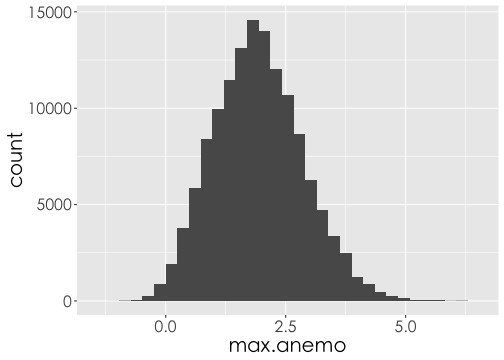
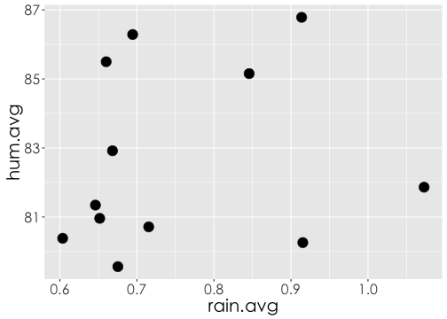
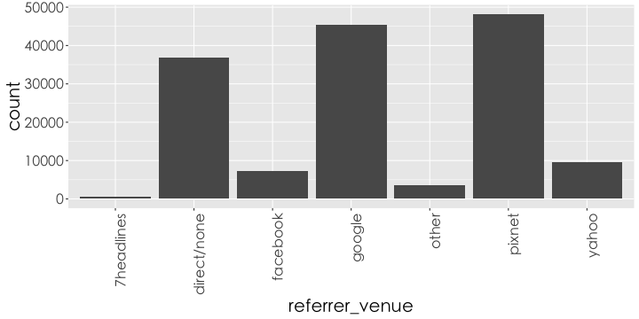
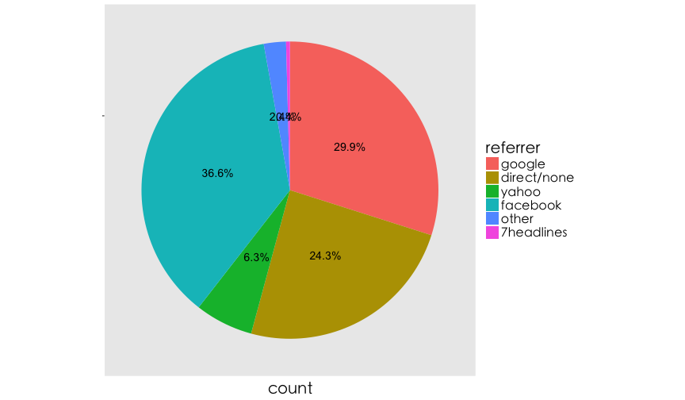
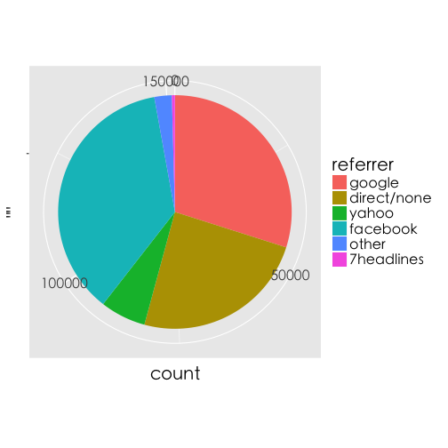

EDA with R
Data Visualization with ggplot
Ben Chen, Johnson Hsieh
The Anatomy of a Plot
Data Visualization
- 清晰有效地傳達與溝通訊息
- 教學、研究、宣傳
- 美學、功能兼顧
- 統計圖形、訊息可視化
- 參考Johnson於DSHC meetp的DataViz 介紹
ggplot2簡介
- 2015年，最受歡迎的R套件之一
- R環境下的繪圖套件
- 取自 “The Grammar of Graphics” (Leland Wilkinson, 2005)
- 設計理念
- 採用圖層系統
- 用抽象的概念來控制圖形，避免細節繁瑣
- 圖形美觀
ggplot2基本架構
- 資料 (data) 和映射 (mapping)
- 幾何對象 (
geometric) - 座標尺度 (
scale) - 統計轉換 (
statistics) - 座標系統 (
coordinante) - 圖層 (layer)
- 刻面 (
facet) - 主題 (
theme)
ggplot2 基本語法
ggplot(data=..., aes(x=..., y=...)) + geom_xxx(...) +
stat_xxx(...) + facet_xxx(...) + ...
ggplot描述 data 從哪來aes描述圖上的元素跟 data 之類的對應關係geom_xxx描述要畫圖的類型及相關調整的參數- 常用的類型諸如：
geom_bar,geom_points,geom_line,geom_polygon
注意事項
- 使用
data.frame儲存資料 (不可以丟matrix物件) - 使用 long format (利用
reshape2將資料轉換成 1 row = 1 observation) - 文字型態的資料預設依 ascii 編碼順序做排序
需要的套件
# install.packages(c("ggplot2", "data.table", "dplyr", "reshape2"), repos = "http://cran.csie.ntu.edu.tw/")
library(ggplot2)
library(data.table)
library(dplyr)
library(reshape2)
一切從讀檔開始 (CSV)
# 讀檔起手式
ubike <- read.csv('ubikebyhourutf8/ubike-hour-201502-utf8.csv') #請輸入正確的檔案路徑
# 讀檔進階招式
ubike <- read.csv('檔案路徑',
colClasses = c("factor","integer","integer","factor","factor",
"numeric","numeric","integer","numeric","integer",
"integer","numeric","numeric", "integer","integer",
"numeric","numeric","numeric", "numeric","numeric",
"numeric"))
# 讀檔大絕招
ubike <- fread('檔案路徑',
data.table = FALSE,
colClasses = c("factor","integer","integer","factor",
"factor","numeric", "numeric", "integer",
"numeric", "integer","integer","numeric",
"numeric", "integer","integer","numeric",
"numeric","numeric", "numeric","numeric",
"numeric"))
展示資料
date hour sno sarea sna lat lng
1 2015-02-01 0 1 信義區 捷運市政府站(3號出口) 25.04086 121.5679
2 2015-02-01 0 2 大安區 捷運國父紀念館站(2號出口) 25.04100 121.5569
3 2015-02-01 0 3 信義區 台北市政府 25.03780 121.5652
4 2015-02-01 0 5 信義區 興雅國中 25.03656 121.5687
5 2015-02-01 0 7 信義區 信義廣場(台北101) 25.03304 121.5656
6 2015-02-01 0 8 信義區 世貿三館 25.03521 121.5637
tot avg.sbi max.sbi min.sbi std.sbi avg.bemp max.bemp min.bemp std.bemp
1 180 4.153 11 0 3.643 175.847 180 169 3.643
2 48 1.322 5 0 1.383 46.678 48 43 1.383
3 40 0.407 1 0 0.495 39.593 40 39 0.495
4 60 1.220 3 0 0.966 57.780 59 56 0.966
5 80 2.949 9 0 3.345 75.983 79 69 3.476
6 60 1.983 7 0 2.543 57.017 59 52 2.543
temp humidity pressure max.anemo rainfall
1 13.73755 87.49700 1025.791 1.7773507 0
2 13.80401 86.81732 1025.411 0.8515215 0
3 13.82918 87.25139 1025.754 1.6134319 0
4 13.83382 87.56932 1025.875 1.9129308 0
5 13.92348 87.48805 1025.863 1.9093223 0
6 13.88992 87.21782 1025.738 1.6235643 0
欄位說明
name.eng name.cht name.eng name.cht 1 date 日期 12 std.sbi 車輛數標準差 2 hour 時間 13 avg.bemp 平均空位數 3 sno 場站代號 14 max.bemp 最大空位數 4 sarea 場站區域 15 min.bemp 最小空位數 5 sna 場站名稱 16 std.bemp 空位數標準差 6 lat 緯度 17 temp 平均氣溫 7 lng 經度 18 humidity 溼度 8 tot 總停車格 19 pressure 氣壓 9 avg.sbi 平均車輛數 20 max.anemo 最大風速 10 max.sbi 最大車輛數 21 rainfall 降雨量 11 min.sbi 最小車輛數
單一數值：Histogram
Histogram
geom_histogram
thm <- function() theme(text=element_text(size=20, family="STHeiti")) # 控制字體與大小
# STHeiti是只有Mac才有的字體, 用來解決Mac系統中文顯示錯誤的問題
# Windows系統的使用者請忽略 `+ thm()` 指令
ggplot(ubike) +
geom_histogram(aes(x=max.anemo, y=..count..)) + thm()

Histogram
aes(y=..count..)vs.aes(y=..density..)
ggplot(ubike) +
geom_histogram(aes(x=max.anemo, y=..density..)) + thm()

Histogram
aes(x=..., y=..., fill=...)
ggplot(ubike) +
geom_histogram(aes(x=max.anemo, y=..density.., fill=..count..)) + thm()

Histogram + Density
geom_histogram() + geom_density()
ggplot(ubike, aes(x=max.anemo)) +
geom_histogram(aes(y=..density.., fill=..count..)) +
geom_density() + thm()

量化 v.s. 量化：Scatter Plot
繪圖之前的整理資料
文山區各站點在"2015-02"的平均溼度 vs. 平均雨量
x3 <- filter(ubike, grepl("2015-02", date, fixed = TRUE), sarea == "文山區") %>%
group_by(sna) %>%
summarise(rain.avg = mean(rainfall), hum.avg = mean(humidity))
x3 # print(x3)
Source: local data frame [12 x 3]
sna rain.avg hum.avg
(fctr) (dbl) (dbl)
1 國立政治大學 0.9138340 86.78447
2 捷運動物園站(2號出口) 0.6944844 86.28648
3 捷運景美站 0.6752715 79.55976
4 捷運木柵站 0.6601309 85.49780
5 考試院 0.9153789 80.25694
6 羅斯福景隆街口 0.6036172 80.38156
7 師範大學公館校區 0.7153086 80.71318
8 台北花木批發市場 0.6517227 80.96029
9 臺北市立景美女中 1.0727852 81.86252
10 文山行政中心 0.8457266 85.15373
11 文山運動中心 0.6683047 82.91816
12 興豐公園 0.6461699 81.34372
Scatter plot
geom_point()- 參數
size放在aes()函數外面，表示所有的資料固定用相同的size
ggplot(x3) +
geom_point(aes(x = rain.avg, y = hum.avg), size=5) + #size控制點的大小
thm()

Grouped scatter plot
ggplot(x3) +
# 放在aes裡的 colour 和 size 可依資料調整顏色和大小
geom_point(aes(x = rain.avg, y = hum.avg, colour=sna, size=rain.avg)) +
# 限制大小
scale_size(range=c(5,10)) +
thm()
Grouped scatter plot

量化 v.s. 量化：Line Chart
WorldPhones
data(WorldPhones)
WorldPhones
N.Amer Europe Asia S.Amer Oceania Africa Mid.Amer
1951 45939 21574 2876 1815 1646 89 555
1956 60423 29990 4708 2568 2366 1411 733
1957 64721 32510 5230 2695 2526 1546 773
1958 68484 35218 6662 2845 2691 1663 836
1959 71799 37598 6856 3000 2868 1769 911
1960 76036 40341 8220 3145 3054 1905 1008
1961 79831 43173 9053 3338 3224 2005 1076
小挑戰
如何畫出每年亞洲電話數量的Line chart?
ggplot(WorldPhones, aes(x=?????, y=Asia)) + ......
哪裏不對？
ggplot(WorldPhones)
Error: ggplot2 doesn't know how to deal with data of class matrix
class(WorldPhones)
[1] "matrix"
matrix 轉換 data.frame
WP.df <- as.data.frame(WorldPhones)
WP.df$year <- rownames(WP.df)
class(WP.df)
[1] "data.frame"
Line chart
geom_line()
ggplot(WP.df, aes(x=year, y=Asia)) + geom_line()
geom_path: Each group consists of only one observation. Do you need to
adjust the group aesthetic?

Should be Number
as.numeric()
str(WP.df)
'data.frame': 7 obs. of 8 variables:
$ N.Amer : num 45939 60423 64721 68484 71799 ...
$ Europe : num 21574 29990 32510 35218 37598 ...
$ Asia : num 2876 4708 5230 6662 6856 ...
$ S.Amer : num 1815 2568 2695 2845 3000 ...
$ Oceania : num 1646 2366 2526 2691 2868 ...
$ Africa : num 89 1411 1546 1663 1769 ...
$ Mid.Amer: num 555 733 773 836 911 ...
$ year : chr "1951" "1956" "1957" "1958" ...
WP.df$year <- as.numeric(WP.df$year)
Line chart
ggplot(WP.df, aes(x=year, y=Asia)) +
geom_line() + thm()

Line chart and scatter plot
ggplot(WP.df, aes(x=year, y=Asia)) +
geom_line(size=2) + #size控制線的寬度或點的大小
geom_point(size=5) + thm()

How to plot multiple lines?
Wide format
| N.Amer | Europe | Asia | S.Amer | Oceania | Africa | Mid.Amer | year | |
|---|---|---|---|---|---|---|---|---|
| 1951 | 45939.00 | 21574.00 | 2876.00 | 1815.00 | 1646.00 | 89.00 | 555.00 | 1951.00 |
| 1956 | 60423.00 | 29990.00 | 4708.00 | 2568.00 | 2366.00 | 1411.00 | 733.00 | 1956.00 |
| 1957 | 64721.00 | 32510.00 | 5230.00 | 2695.00 | 2526.00 | 1546.00 | 773.00 | 1957.00 |
| 1958 | 68484.00 | 35218.00 | 6662.00 | 2845.00 | 2691.00 | 1663.00 | 836.00 | 1958.00 |
| 1959 | 71799.00 | 37598.00 | 6856.00 | 3000.00 | 2868.00 | 1769.00 | 911.00 | 1959.00 |
| 1960 | 76036.00 | 40341.00 | 8220.00 | 3145.00 | 3054.00 | 1905.00 | 1008.00 | 1960.00 |
| 1961 | 79831.00 | 43173.00 | 9053.00 | 3338.00 | 3224.00 | 2005.00 | 1076.00 | 1961.00 |
\[\Downarrow\]
Long format
library(reshape2)
WP.long <- melt(WP.df, id='year') #id是將保留的欄位名稱
colnames(WP.long) <- c('year','area','number')
| year | area | number | |
|---|---|---|---|
| 1 | 1951.00 | N.Amer | 45939.00 |
| 2 | 1956.00 | N.Amer | 60423.00 |
| 3 | 1957.00 | N.Amer | 64721.00 |
| 4 | 1958.00 | N.Amer | 68484.00 |
| 5 | 1959.00 | N.Amer | 71799.00 |
| 6 | 1960.00 | N.Amer | 76036.00 |
| 7 | 1961.00 | N.Amer | 79831.00 |
| 8 | 1951.00 | Europe | 21574.00 |
| 9 | 1956.00 | Europe | 29990.00 |
| 10 | 1957.00 | Europe | 32510.00 |
| 11 | 1958.00 | Europe | 35218.00 |
| 12 | 1959.00 | Europe | 37598.00 |
| 13 | 1960.00 | Europe | 40341.00 |
| 14 | 1961.00 | Europe | 43173.00 |
| 15 | 1951.00 | Asia | 2876.00 |
| 16 | 1956.00 | Asia | 4708.00 |
| 17 | 1957.00 | Asia | 5230.00 |
| 18 | 1958.00 | Asia | 6662.00 |
| 19 | 1959.00 | Asia | 6856.00 |
| 20 | 1960.00 | Asia | 8220.00 |
| 21 | 1961.00 | Asia | 9053.00 |
| 22 | 1951.00 | S.Amer | 1815.00 |
| 23 | 1956.00 | S.Amer | 2568.00 |
| 24 | 1957.00 | S.Amer | 2695.00 |
| 25 | 1958.00 | S.Amer | 2845.00 |
| 26 | 1959.00 | S.Amer | 3000.00 |
| 27 | 1960.00 | S.Amer | 3145.00 |
| 28 | 1961.00 | S.Amer | 3338.00 |
| 29 | 1951.00 | Oceania | 1646.00 |
| 30 | 1956.00 | Oceania | 2366.00 |
| 31 | 1957.00 | Oceania | 2526.00 |
| 32 | 1958.00 | Oceania | 2691.00 |
| 33 | 1959.00 | Oceania | 2868.00 |
| 34 | 1960.00 | Oceania | 3054.00 |
| 35 | 1961.00 | Oceania | 3224.00 |
| 36 | 1951.00 | Africa | 89.00 |
| 37 | 1956.00 | Africa | 1411.00 |
| 38 | 1957.00 | Africa | 1546.00 |
| 39 | 1958.00 | Africa | 1663.00 |
| 40 | 1959.00 | Africa | 1769.00 |
| 41 | 1960.00 | Africa | 1905.00 |
| 42 | 1961.00 | Africa | 2005.00 |
| 43 | 1951.00 | Mid.Amer | 555.00 |
| 44 | 1956.00 | Mid.Amer | 733.00 |
| 45 | 1957.00 | Mid.Amer | 773.00 |
| 46 | 1958.00 | Mid.Amer | 836.00 |
| 47 | 1959.00 | Mid.Amer | 911.00 |
| 48 | 1960.00 | Mid.Amer | 1008.00 |
| 49 | 1961.00 | Mid.Amer | 1076.00 |
Multiple Line
ggplot(WP.long,aes(x=year, y=number, group=area, color=area)) + # gruop按照不同區域劃線
geom_line(size=1.5) + geom_point(size=5) + thm()

質化 v.s. 量化：Bar Chart
讀取檔案
痞客邦 Visitor Log 訓練資料集 (train.csv)
pixnet <- read.csv('train.csv', stringsAsFactors = FALSE)
- 2014-11-01 至 2014-11-30 期間，10000 筆隨機取樣的台灣地區網站訪客的瀏覽紀錄
欄位說明
- url_hash - 去識別後的部落格文章 url
- resolution - 瀏覽裝置的螢幕解析度
- browser - 瀏覽裝置的瀏覽器
- os - 瀏覽裝置的作業系統
- device_marketing - 瀏覽裝置的產品型號
- device_brand - 瀏覽裝置的品牌名稱
- cookie_pta - 去識別化的瀏覽者代碼
- date - 瀏覽日期
- author_id - 文章作者 ID 去識別碼
- category_id - 文章分類
- referrer_venue - 訪客來源（網域）
Bar chart - geom_bar()
ggplot(pixnet, aes(x=referrer_venue)) + geom_bar() +
theme(axis.text.x = element_text(angle = 90, hjust = 1)) +
thm()

Bar chart
- 長條圖排序
library(dplyr)
level <- table(pixnet$referrer_venue) %>% names
rank <- table(pixnet$referrer_venue) %>% order(decreasing = TRUE)
level
[1] "7headlines" "direct/none" "facebook" "google" "other"
[6] "pixnet" "yahoo"
level[rank]
[1] "pixnet" "google" "direct/none" "yahoo" "facebook"
[6] "other" "7headlines"
pixnet$referrer_venue <- factor(pixnet$referrer_venue, levels = level[rank])
Bar chart
- 長條圖排序
ggplot(pixnet, aes(x=referrer_venue)) + geom_bar() +
theme(axis.text.x = element_text(angle = 90, hjust = 1)) +
thm()

兩種類別
ub2 <- filter(ubike, sarea=='中和區',hour==8) %>%
mutate(is.rain=rainfall>1) %>%
mutate(is.rain=factor(is.rain, levels=c(FALSE, TRUE),
labels = c("晴天","雨天"))) %>%
select(date,avg.bemp, sna, is.rain, tot) %>%
group_by(sna, is.rain) %>%
summarise(use_rate=mean(avg.bemp/tot))
head(ub2)
Source: local data frame [6 x 3]
Groups: sna [3]
sna is.rain use_rate
(fctr) (fctr) (dbl)
1 捷運永安市場站 晴天 0.7410044
2 捷運永安市場站 雨天 0.7827569
3 秀山國小 晴天 0.5095047
4 秀山國小 雨天 0.3444234
5 中和公園 晴天 0.6878744
6 中和公園 雨天 0.6147391
兩種類別
ggplot(ub2, aes(x=sna, y=use_rate, fill=is.rain)) +
geom_bar(stat='identity') + # stat='identity'以表格的值做為bar的高度
theme(axis.text.x = element_text(angle = 90, hjust = 1)) + #控制字的方向
thm()
兩種類別: stack

兩種類別: dodge
ggplot(ub2,aes(x=sna, y=use_rate, fill=is.rain)) +
geom_bar(stat='identity',position = 'dodge') + #dodge類別並排
theme(axis.text.x = element_text(angle = 90, hjust = 1)) + #控制字的方向
thm()

Pie Chart: Bar chart變形
整理資料
pix <- data.frame(table(pixnet$referrer_venue)) #table可以算個類別個數
colnames(pix) <- c('referrer','count')
pix[5,2] <- pix[5,2] + pix[1,2]
pix <- pix[-1,]
Pie Chart: Bar Chart變形

Pie Chart: Bar Chart變形
ggplot(pix,aes(x="", y=count, fill=referrer))+
geom_bar(stat='identity', width=1)+
coord_polar('y')+
geom_text(aes(y = count*0.5+ c(0, cumsum(count)[-length(count)]),
label = paste(round(count/sum(count),3)*100,'%',sep="")),
size=5)+
theme(axis.title.y=element_blank(),
axis.text.x=element_blank(),
panel.grid=element_blank()) + thm()
Pie Chart: Bar Chart變形
整理資料
pix <- arrange(pix, -count)
ggplot(pix,aes(x="", y=count, fill=referrer)) +
geom_bar(stat='identity',width=1) +
coord_polar('y') +
geom_text(aes(y = count*0.5 + c(0, cumsum(count)[-length(count)]),
label = paste(round(count/sum(count),3)*100,'%',sep="")),
size=5) +
theme(axis.title.y = element_blank(),
axis.text.x=element_blank(),
panel.grid=element_blank()) + thm()
Pie Chart: Bar Chart變形
整理資料
快速重播 + 進階繪圖
ggplot2基本架構
- 資料 (data) 和映射 (mapping)
- 幾何對象 (
geometric) - 座標尺度 (
scale) - 統計轉換 (
statistics) - 座標系統 (
coordinante) - 圖層 (layer)
- 刻面 (
facet) - 主題 (
theme)
Data and Mapping
- data :
ggplot(data=..) - mapping :
aes(x=..., y=...)
ggplot(data=WP.df) + geom_line(aes(x=year, y=Asia))
geometric
geom_line,geom_point, ...
ggplot(WP.df, aes(x=year,y=Asia)) +
geom_line(size=2) + geom_point(size=5)

scale
size,scale_size,scale_xxx_xxx, ...
ggplot(x3) +
geom_point(aes(x = rain.avg, y = hum.avg), size=5) + #size控制點的大小
thm()

statistics
ggplot(pressure,aes(x=temperature, y=pressure)) +
geom_point() + stat_smooth()

coordinante
ggplot(pix,aes(x="", y=count, fill=referrer)) +
geom_bar(stat='identity') + thm()

ggplot(pix,aes(x="", y=count, fill=referrer)) +
geom_bar(stat='identity', width=1) +
coord_polar('y') + thm()

facet
- 資料整理，
中和區各場站每日平均雨量
rain <- filter(ubike, grepl("2015-02", date, fixed = TRUE), sarea == "中和區") %>%
group_by(date, sna) %>%
summarise(avg.rain = mean(rainfall))
facet
- Line Chart
ggplot(rain) +
geom_line(aes(x=date, y=avg.rain, group=sna, colour=sna), size=2) +
theme(axis.text.x = element_text(angle = 90, hjust = 1)) + #控制字的方向
thm()

Line Chart in Facets
ggplot(rain) +
geom_line(aes(x=date, y=avg.rain, group=sna, colour=sna),size=2) +
theme(axis.text.x = element_text(angle = 90, hjust = 1)) + #控制字的方向
thm() +
facet_wrap(~sna, nrow=2) # facet_wrap將各站的情況分開畫

圖形輸出
圖形輸出
- 利用RStudio UI介面存擋
命立列輸出
畫完圖之後，再存檔~~
ggsave('檔案名稱') ggsave("mtcars.pdf", width = 4, height = 4) ggsave("mtcars.png", width = 4, height = 4, dpi = 300)
學習資源
掌握心法後，如何自行利用R 解決問題
- 了解自己的需求
- 詢問關鍵字與函數
- 歡迎來信 benjamin0901@gmail.com, johnson@dsp.im或其他教師
- 多多交流
- Taiwan R User Group，mailing list: Taiwan-useR-Group-list@meetup.com
- ptt R_Language版
- R軟體使用者論壇